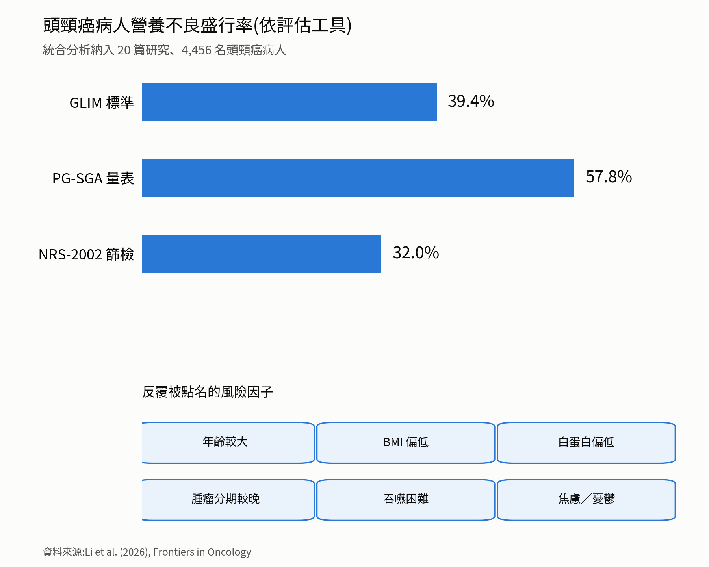
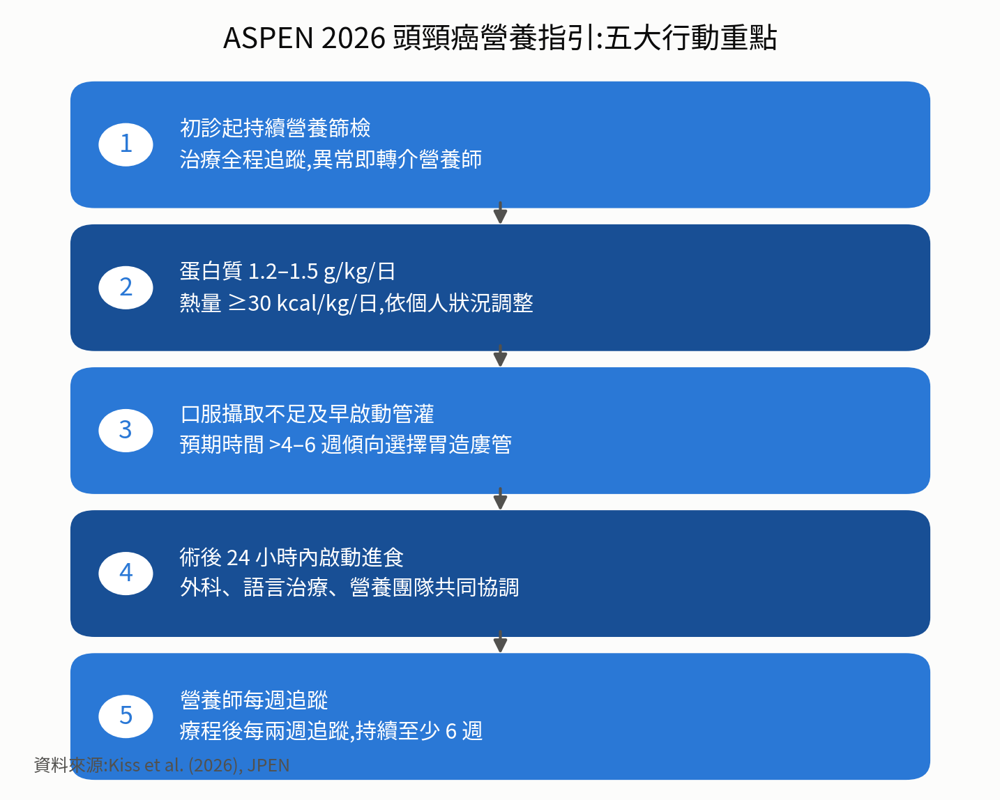

治療還沒走完，人先被餓垮
ASPEN 2026 年 3 月發布第一份頭頸癌專屬營養指引：蛋白質每公斤 1.2 至 1.5 公克、熱量每公斤至少 30 大卡，營養篩檢從第一次就診開始。
頭頸癌病人是最容易被「悄悄餓壞」的一群：腫瘤長在吃飯必經的地方，手術切除組織，放療讓黏膜破皮、唾液乾涸、味覺失靈，化療再疊上噁心與食慾不振。統合分析裡，用 GLIM 標準有 39.4% 已達營養不良，PG-SGA 更高到 57.8%。
一、背景：頭頸癌病人，不是瘦得比較快，而是最容易被餓垮
在腫瘤科的病房裡，頭頸癌病人一直是最容易被「悄悄餓壞」的一群。腫瘤長在口腔、咽喉、鼻咽這些吃飯必經的地方，手術會切除部分組織，放射線治療會讓黏膜破皮、唾液乾涸、味覺失靈，化學治療再疊上噁心與食慾不振。三管齊下，吞嚥這件事，對很多病人來說，從「理所當然」變成「每一口都是挑戰」。
臨床上常見的狀況是：病人因為張口困難（牙關緊閉）、口腔黏膜炎疼痛、唾液分泌銳減，連白開水都吞得辛苦，更別說固體食物；味覺改變則讓原本喜歡的食物變得難以下嚥，惡性循環之下，病人往往選擇「少吃一點就好」，體重在幾週內悄悄掉了一大截，直到回診量體重才被發現。這也是為什麼頭頸癌的營養問題，經常不是慢慢惡化，而是在治療中段突然「斷崖式下滑」。
今年發表於《Frontiers in Oncology》的一篇統合分析，彙整了 20 篇研究、共 4,456 名頭頸癌病人的資料，結果相當驚人：若用 GLIM 標準判定，近四成（39.4%）病人已達營養不良；若用 PG-SGA 量表，比例甚至高達 57.8%；即使用相對寬鬆的 NRS-2002 篩檢，也有三成二病人被列為營養風險族群[1]。年齡較大、BMI 偏低、白蛋白偏低、腫瘤分期較晚、吞嚥困難，以及焦慮與憂鬱情緒，都是被反覆點名的風險因子[1]。
這不是「瘦一點沒關係」的小事。體重掉得快、肌肉流失得多的病人，治療中斷率更高、傷口癒合更慢、住院天數更長，連帶影響存活。營養不良與肌少症在頭頸癌病人身上經常同時發生：肌肉量下降，不只讓病人更容易疲憊、跌倒，還會直接影響放射線治療與化學藥物的劑量耐受度。體力撐不住，治療就可能被迫延後或縮減劑量，長期下來反而衝擊治療效果。營養照顧因此不是治療之外的選配，而是治療能不能順利走完的核心變數。問題是，長久以來，「該怎麼吃、什麼時候該插管、蛋白質要吃多少」這些具體問題，臨床上其實缺乏一份專門針對頭頸癌病人、有清楚數字可以依循的指引，直到今年三月才出現。

二、新知報導：ASPEN 首度發布頭頸癌專屬營養指引，把模糊地帶變成具體數字
2026 年 3 月，美國腸道暨靜脈營養醫學會（American Society for Parenteral and Enteral Nutrition, ASPEN）在其官方期刊《JPEN》正式發布《成人頭頸癌營養指引》，由 21 位跨領域專家（包括營養師、醫師、藥師與語言治療師）共同制定，是這個領域第一份專門針對頭頸癌病人的系統性營養指引[2][3]。
指引的重點，說白了是把過去各醫院各自摸索的做法，收斂成幾個可以直接照做的數字與時機。篩檢要趁早、要反覆做：所有病人在第一次就診時就該用經驗證的工具做營養篩檢，治療全程持續追蹤，一旦篩檢異常就轉介營養師做完整評估，不必等到病人明顯消瘦才處理。熱量與蛋白質也給出明確數字：蛋白質每公斤體重 1.2 至 1.5 公克、熱量至少每公斤 30 大卡，依症狀嚴重度與個人狀況調整，透過口服、口服營養補充品或管灌合併達成[2]。
口服攝取量已經不足以支撐治療時，指引建議及早啟動管灌，由跨團隊討論選擇鼻胃管或胃造廔管（PEG/RIG）；預期管灌時間超過四到六週，通常傾向選擇胃造廔管[2]。手術病人則建議術後 24 小時內就啟動營養介入，由外科、語言治療與營養團隊協調，循序漸進恢復經口進食[2]。追蹤頻率同樣寫進指引：治療期間每週一次，治療結束後每兩週一次、持續至少六週，語言治療師則建議在治療前就先介入吞嚥功能評估[2]。
這份指引背後其實有個現實問題。根據《ASA Generations》的報導，美國門診腫瘤中心平均每 2,308 位病人才配置一位營養師，人力嚴重不足——「固定追蹤頻率」某種程度上是用制度補上人力缺口[4]。食慾不振的處理順序也寫得明確：優先用飲食衛教與調整，藥物型食慾促進劑只建議短期使用；精胺酸、麩醯胺酸、omega-3 脂肪酸這類特殊營養素或免疫營養配方，證據仍屬有條件建議，不是人人都需要的必要處方[2]

三、這跟台灣病人有什麼關係?台灣用得到嗎?健保有給付嗎?
頭頸癌在台灣並不是罕見疾病，長年是男性好發癌症的前幾名，與嚼檳榔、吸菸、飲酒等習慣密切相關，而這些病人往往在確診時就已經合併口腔黏膜受損、進食困難，營養風險比其他癌別更早浮現。事實上，台灣並非從零開始：早在 2018 年，國內多位放射腫瘤科、耳鼻喉科與營養專家就已在《Oral Oncology》期刊發表過頭頸癌病人接受化放療的營養介入共識，內容同樣強調及早篩檢、及早介入的原則[5]。ASPEN 這份新指引提出的具體數字與時機，對台灣醫療團隊而言不是全新概念，而是把既有共識補上更精確的刻度。多數醫學中心與頭頸腫瘤團隊要落實這套做法，難度不高。
那麼實際到院所，病人會遇到什麼?管灌相關的醫療器材，例如鼻胃管、胃造廔管路與管灌耗材，屬於健保「一般材料」給付範圍，醫院不得要求病人額外自費；而近年健保署也推動「無管人生」政策，對成功協助病人移除長期留置鼻胃管、恢復經口進食的醫療團隊提供給付誘因[6]，這個方向恰好與 ASPEN 指引「盡快恢復安全經口進食」的精神一致。至於住院期間由醫院提供的管灌配方，多半已包含在住院醫療費用中。
比較容易產生落差的，是出院後長期使用的市售口服營養補充品（例如高蛋白配方營養品），這類產品在台灣多半歸類為特殊營養食品，原則上須自費，健保並不常規給付，實際費用負擔會因醫院、產品與個人使用量而有落差，建議直接向主治醫師或個管師確認，部分醫院也設有醫療社工或慈善資源可協助經濟困難的病人。至於營養師諮詢，住院期間由醫師開立會診通常不另外收費；許多頭頸腫瘤治療量能較大的醫學中心，也已將營養師個管服務納入癌症診療團隊的常規照護，病人不妨主動詢問是否有專屬的頭頸腫瘤個案管理師或營養諮詢管道，而非等到體重明顯下降才求助。
近年台灣不少醫學中心也陸續成立頭頸腫瘤多專科整合門診，病人可在同一次回診中同時接觸外科、腫瘤科、放射腫瘤科、營養師與語言治療師，這樣的照護模式，本質上就是 ASPEN 指引所強調的跨團隊合作。對病人而言，實際可以做的，是主動詢問自己就診的醫院是否有這類整合門診或頭頸腫瘤個案管理師，而不是被動等轉介。
對病人與家屬來說，這份指引真正想傳達的態度很簡單：營養不是治療結束後才處理的「善後」，而是從第一天就要跟腫瘤治療平行進行的照護項目。如果吞嚥變得吃力、體重持續下滑，這不是意志力的問題，及早跟醫療團隊反映、討論是否需要營養補充或管灌介入，才是讓治療能夠順利走完全程的關鍵。這份指引不會取代醫師的判斷，實際的蛋白質目標、進食方式與管路選擇，仍必須由主治團隊依個別狀況決定。
💡 下次回診可以問醫療團隊的三個問題：我目前的體重變化與白蛋白數值，是否已經達到需要營養介入的程度?若吞嚥困難持續超過一到兩週，是否該提前討論管灌選項，而不是等到完全吃不下?出院後的口服營養補充品，醫院或社福資源是否有補助管道可以協助?
這份指引最有價值的地方，是把「該怎麼吃、什麼時候插管」從各憑經驗，變成可以直接照做的數字與時機：每位病人初診就做營養篩檢、治療全程持續追蹤，篩檢異常就轉介營養師；口服撐不住時及早啟動管灌，預期超過四到六週傾向胃造廔管；手術後 24 小時內啟動營養介入。台灣不是從零開始，2018 年就有本土的化放療營養介入共識。實務上會遇到的落差在錢：鼻胃管、胃造廔管與管灌耗材屬健保一般材料給付範圍，住院期間的管灌配方多含在住院費用中；出院後長期使用的市售口服營養補充品多歸類為特殊營養食品，原則上自費，實際負擔請向主治醫師或個管師確認，部分醫院設有社工或慈善資源。真正該做的動作很具體：主動問自己就診的醫院有沒有頭頸腫瘤整合門診或個案管理師，不要等體重明顯掉下來才求助。
參考資料
Li Q, Chen Y, Chen C, Ye M. (2026). Prevalence of malnutrition and nutritional risk, and associated factors in adults with head and neck cancer: a systematic review and meta-analysis. Frontiers in Oncology.
Kiss N, Findlay M, Frowen J, et al. (2026). Guidelines for nutrition in adults with head and neck cancer: The American Society for Parenteral and Enteral Nutrition. Journal of Parenteral and Enteral Nutrition, 50(3), 274–338.
American Society for Parenteral and Enteral Nutrition. (2026). New Guideline: Nutrition and Adult Head and Neck Cancer. ASPEN.
ASA Generations. (2026). Keeping Treatment on Track: New Guidelines on Nutrition Support in Head and Neck Cancer. American Society on Aging.
Lin MC, Shueng PW, Chang WK, et al. (2018). Consensus and clinical recommendations for nutritional intervention for head and neck cancer patients undergoing chemoradiotherapy in Taiwan. Oral Oncology, 81, 16–21.
衛生福利部. (2026). 響應「無管人生」，幫助病人告別鼻胃管，健保新增移除長期留置鼻胃管之獎勵誘因. 衛生福利部.
本文為一般性衛教說明，整理自公開發表的研究與官方公告，不能取代面對面的診療。研究結果適用的族群通常有嚴格條件，是否適用於你的情況，請與你的主治醫師討論。請勿依據本文自行調整、中斷或更換治療。
← 回到醫學新知